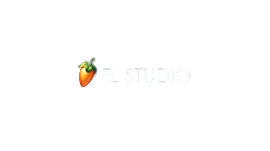

Pembelajaran dasar Digital Audio Workstation menggunakan FL Studio untuk peserta didik kelas XI semester ganjil.

Pengertian dasar musik digital dan penerapannya dalam dunia modern.
Mengenal Digital Audio Workstation dan contoh software DAW populer.
FL Studio adalah software favorit dalam produksi musik digital.
Mengenal fitur utama FL Studio beserta contoh visual penggunaannya.
Melihat contoh sederhana pembuatan beat menggunakan FL Studio.
Peserta didik mampu memahami pengertian dasar DAW dan mengenal fungsi dasar pada FL Studio.